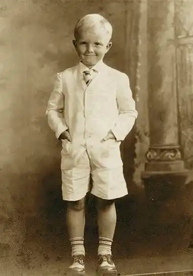
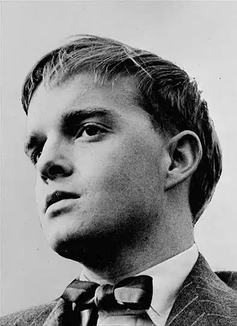
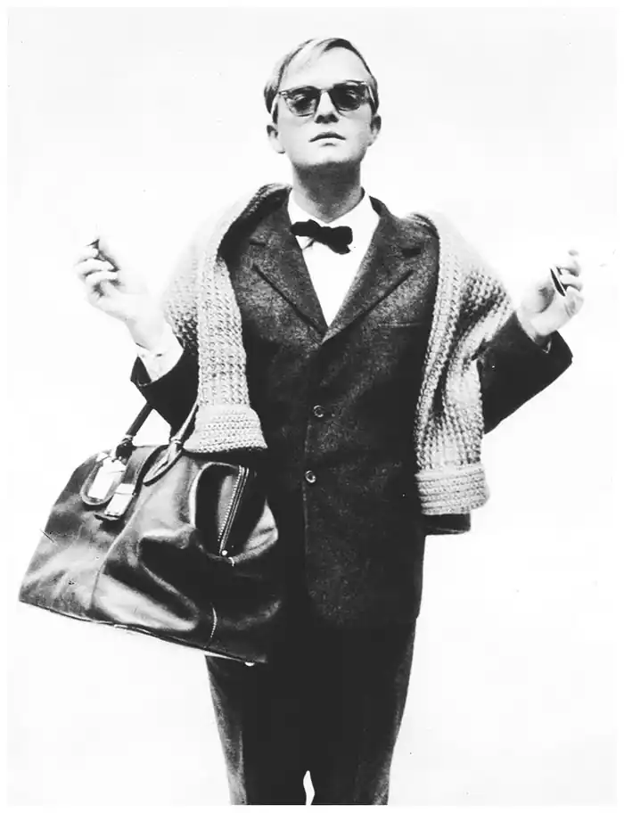

Дитинство
Майбутній класик народився в 1924 році в Новому Орлеані, Луїзіана, з ім'ям Трумен Стрекфус Персонс. Його мати звали Ліллі Мей, а батька — Аркулус, і молоді люди досить легковажно ставилися до виховання сина, частенько залишаючи того на піклування рідних.
Прізвище Капоте письменник взяв у вітчима, кубинського бізнесмена, який з'явився в родині, коли хлопчикові виповнилося 9 років. До цього моменту через розлучення батьків дитина деякий час жив в Алабамі у родичів і був наданий самому собі. Трумен самостійно навчився читати і писати в ранньому віці. У південному Алабамському містечку Монровілль хлопчик познайомився з Харпер Лі, яка живе по сусідству. Діти стали нерозлучними друзями і зберегли цей зв'язок на довгі роки, хоча були протилежностями: чутливий Трумен здавався ще більш м'яким на тлі зухвалої заводили Харпер. Письменники зізнавалися, що знайшли одне в одному прототипи для своїх творів. Так, Капоте надихнув Лі на образ Ділла в знаменитому романі "Убити пересмішника", а Харпер послужила прообразом Айдабели, героїні "Інших голосів, інших кімнат". Вийшовши заміж в 1933 році, мати забирає сина і переїжджає з ним в Нью-Йорк. З 1935-го офіційно усиновлений Трумен носить прізвище, з якої згодом прославиться. З дитинства хлопчик умів захоплююче розповідати історії, ніж заробив популярність в приватній школі на Манхеттені, яку відвідував 3 роки. Прагнучи зробити дитину мужественнее, батьки в 1936-му відправляють його у військову академію, і цей рік письменник згадує як катастрофу. Трумен Капоте закінчував шкільні роки в Коннектикуті, куди сім'я переїхала в 1939 році. Хлопець легковажно ставився до занять, приділяючи увагу лише тих дисциплін, до яких лежала душа. Уже тоді він виділяється з натовпу своєю індивідуальністю і формує навколо себе богемне молодіжну тусовку, яка збирається вечорами, щоб пити вино, танцювати або відправитися по нью-йоркським нічним клубам. Вища освіта Трумен не отримав. На першу роботу юнак влаштувався, будучи учнем випускного класу. Йому вдалося отримати місце в знаменитому літературному журналі "Нью-Йоркер". І хоча хлопець займався копіюванням газетних вирізок та сортуванням зображень, він мав можливість завести знайомства в письменницьких колах і у видавничому бізнесі. Творчість Писати розповіді Капоте почав ще в ранньому дитинстві, а в 1936-му навіть взяв участь в літературному конкурсі, влаштованому газетою Алабами містечка Мобіл. Майстерність юного автора оцінили і відзначили нагородою. У той час хлопчик постійно ходив з блокнотом і олівцем, записуючи історії. Чоловік розповідав, що бажання стати письменником знайшов в дитячому віці і свідомо приділяв ремеслу по кілька годин на день після повернення зі школи. Під час роботи в "Нью-Йоркському" Трумен робив кілька безуспішних спроб опублікувати в журналі свої розповіді. Молода людина пішов з видання, щоб зосередитися на письменницькій роботі, віддаючи їй повний робочий день. Для цього Капоте переїжджає в місто свого дитинства, де починає роботу над дебютним романом "Літній круїз". Книга написана в 1943 році, проте перша публікація відбулася тільки в 2005-му. Героями творів Капоте часто ставали люди "не від світу цього", співзвучні самому письменнику. Автор змусив говорити про себе після появи оповідання "Міріам" в журналі "Мадемуазель" в 1945 році. Історія дивної маленької дівчинки залучила видавців, і "Ренд Хаус" підписав з автором контракт на велику книгу, якої став роман "Інші голоси, інші кімнати", що вийшов в 1948-му. Твір чекав успіх, воно протрималося в списку бестселерів більше 2 місяців, а автор став модною фігурою, яку читачі закидали листами. Після вдалого дебюту Трумен Капоте продовжує писати розповіді, а в 1951 році виходить 2-й роман автора — "Голоси трави", в якому розповідається про неприкаяних людей, які бояться дорослішати і ховаються від усього світу на великому дереві. У 50-ті роки Капоте починає пробувати себе як драматург, співпрацюючи з Голлівудом. Головним успіхом цієї взаємодії вважається екранізація новели "Сніданок у Тіффані", поставлена Блейком Едвардсом в 1961 році. Історія нью-йоркської тусовщиці Холлі Голайтли принесла автору світову славу. Вершиною письменницької діяльності Трумена Капоте став документальний роман "Холоднокровне вбивство", виданий в 1965 році. Автор працював над твором 5 років, виїжджаючи на місце злочину і будучи близько знайомим з дійовими особами, включаючи вбивць. Роман публікувався частинами в журналі "Нью-Йоркер" і приніс визнання критиків і комерційний успіх. Бібліографія Капоте включає десятки творів, багато з яких лягли в основу фільмів і розійшлися на цитати. Особисте життя Трумен Капоте не приховував сексуальну орієнтацію і був відкритим геєм. З цієї причини у чоловіка не було дружини і дітей. Головною людиною в особистому житті Капоте став письменник Джек Дафні, знайомство з яким відбулося в 1948 році. Чоловіки були не схожі один на одного і вели різний спосіб життя: Капоте був витонченим і рафінованим, Джек — мужнім і брутальним. Дафні, що мав за плечима невдалий шлюб з жінкою, вважав за краще відокремлений спосіб життя, а Трумен іскрився і фонтанував на вечірках, без яких себе не мислив. Незважаючи на відмінності, чоловіки були разом 35 років і розлучилися з ініціативи Джека, який втомився миритися з пристрастю партнера до алкоголю і наркотиків. Після розставання з Дафні Капоте занурився в депресію, яку намагався заглушити частими швидкоплинними романами, однак вони не приносили розради. Чоловік обертався в світській тусовці, спілкуючись із зірками шоу-бізнесу, багатими підприємцями і представниками творчої богеми. Письменник був повіреним особою і улюбленцем жінок вищого світу, які знаходили в ньому уважного співрозмовника з тонко відчуває душею. У біографії чоловіка значиться дружба з Мерилін Монро і Елізабет Тейлор, Жаклін Кеннеді і Бейб Палей. Серед багатьох красивих жінок вважалося модним спілкуватися з Труменом Капоте, про що свідчать численні фото прозаїка зі знаменитостями. Смерть Останні роки Трумен Капоте майже не займався літературною діяльністю. Ймовірно, є привід говорити про творчу кризу, що наступив в останнє десятиліття життя. З роками загострилися проблеми, пов'язані з наркотиками і алкоголем. Зроблені спроби лікування в реабілітаційних центрах закінчувалися зривами. До того ж у чоловіка розвинулася манія переслідування. У 1984 році фізичний стан письменника помітно погіршився, що погіршилося передозуванням, з якої Капоте потрапив до лікарні Лонг-Айленда. Щоб відновити душевну рівновагу, Трумен поїхав до Каліфорнії до давньої подруги Джоан Карсон. В її будинку в Лос-Анджелесі 25 серпня 1984 го письменник помер на 60-му році життя. Причиною смерті стала хвороба печінки, ускладнена інтоксикацією наркотиками. Після смерті тіло прозаїка кремували. Прах Трумена Капоте одного разу був вкрадений, а в 2016 році останки письменника продали з аукціону невідомій особі за $ 45 тис. Бібліографія 1943 — "Літній круїз" 1948 — "Інші голоси, інші кімнати" 1949 — "Дерево ночі і інші оповідання" 1950 — "Місцевий колорит" 1951 — "Голосу трави" 1956 — "Музи чути" 1958 — "Сніданок у Тіффані" 1965 — "Холоднокровне вбивство" 1973 — "Собаки гавкають" 1980 — "Музика для хамелеонів"